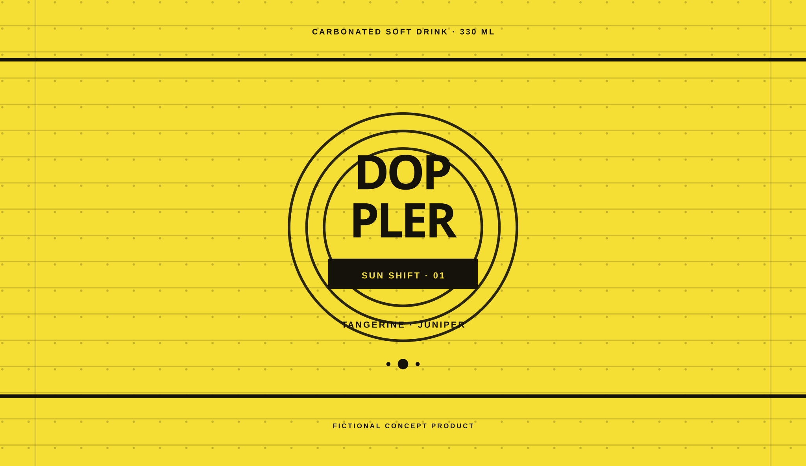

Carbonated soft drinkThree flavor signals
Soda has
a signal.
Doppler is a bright interruption in cold aluminum: fruit up front, fine bubbles through the middle, and a botanical turn at the end.
- Format
- 6 × 330 ml
- Selected
- Sun Shift
- Blend
- Tangerine · juniper

Drag the can / use arrow keys
Tune the flavor
Sun Shift selected.
Three signals
Same fizz.
Different direction.
Each Doppler blend keeps the same crisp carbonation and changes the path around it. Pick by flavor, by color, or by the hour you are in.
01 / 03
Tangerine arrives bright; juniper pulls the finish somewhere greener.
The sensation
One cold can.
Three beats.
Open the
interruption.
-
01 / Crack
PSST
The tab breaks the quiet. Fine bubbles make the first move.
-
02 / Rush
FSSSH
Fruit crosses fast; carbonation keeps the blend sharp and moving.
-
03 / Finish
AHH
Juniper, hibiscus, or toasted spice leaves the final signal.
Carbonated soft drink
330 ml aluminum can
Three fictional blends
Serve cold
Compose a six
Build your
signal.
Six cans, any balance. Start with two of each, then move the mix until it sounds like your table.
€14 / fictional mixed six-pack